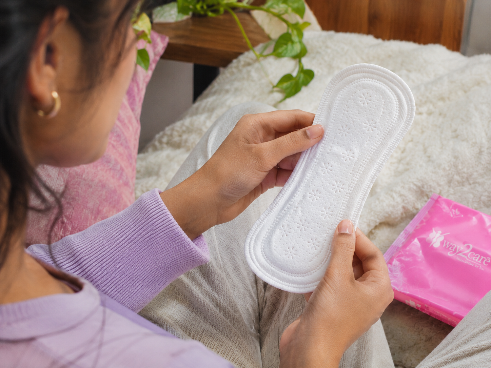
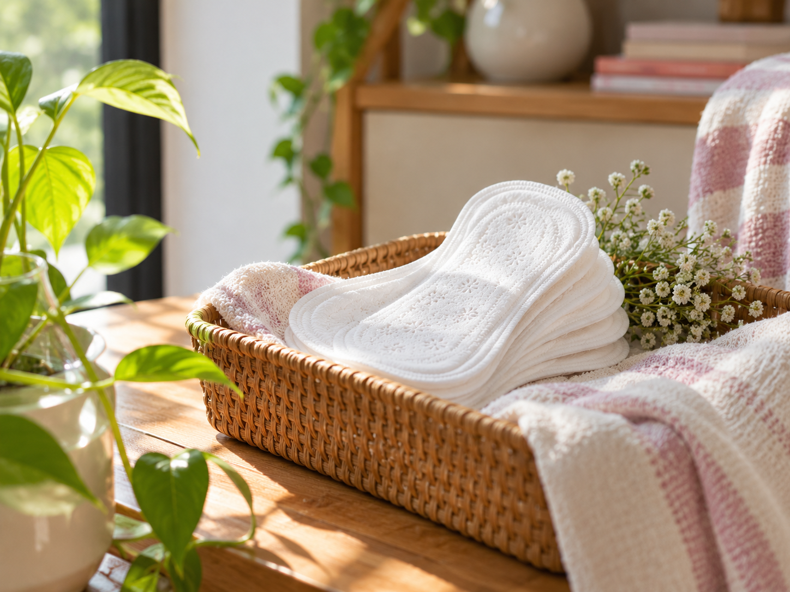

Crafted around women.
Real routines, changing phases and honest experiences guide the way we think about care.

We are here to make feminine care feel more thoughtful, more open and more naturally part of everyday life.
Explore our story ↓ Our beginning
Our beginningWay2Care began with a simple belief: feminine care should never feel clinical, confusing or disconnected from the person using it.
We wanted to create a gentler space—one where products, information and conversations work together to support changing bodies, routines and needs.
That means listening closely, explaining clearly and designing every detail with comfort at the centre.
What we place closest to our bodies deserves greater thought. Comfort, material choices and clear information can shape how confidently we move through changing routines.
Way2Care approaches feminine wellbeing as an ongoing relationship—not a quick response to discomfort. Our care is designed to listen, adapt and move with every phase of real life.
Three ideas keep our approach grounded: listen to women, choose gentleness and keep thinking beyond the moment.
Real routines, changing phases and honest experiences guide the way we think about care.

Comfort, approachable guidance and thoughtful formats shape every part of the experience.

Nature-led inspiration and reusable choices help us look beyond a single moment of care.
The promise behind Way2Care.
For real people, changing phases and everyday routines.
Guided by gentleness, simplicity and considered choices.
Clear information and honest conversations, always.
Every small detail has a reason and a person behind it.
Questions, ideas or a thoughtful collaboration—our door is open.
Contact us →